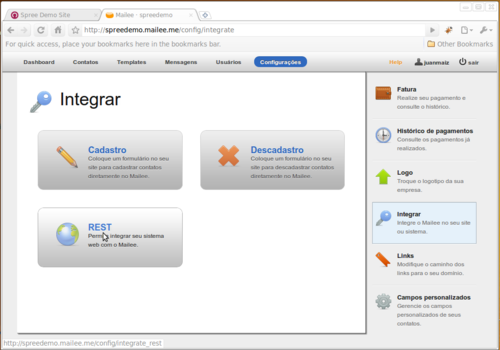
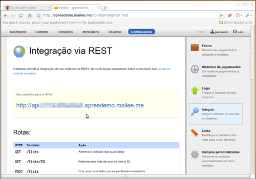
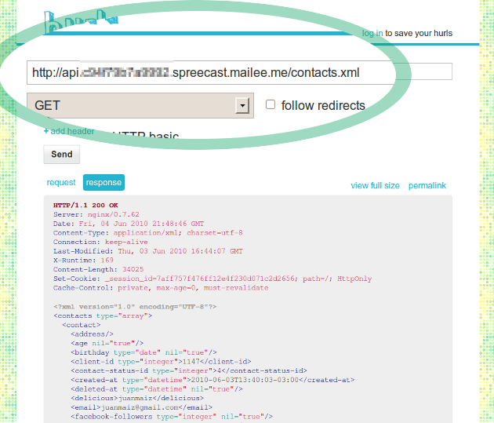

1 A chave de acesso
Para usar a API, o Mailee.me gera uma chave secreta para cada cliente. Para pegar esta chave, vá em Configuração, depois em Integrar e por fim em REST.
Tome muito cuidado com esta chave, ela é tão ou mais importante que a sua senha. Com ela, alguém mal intencionado poderá ter acesso aos seus contatos.


2 Ações
| HTTP | Caminho | Ação |
| GET | /lists | Retorna a coleção das suas listas. |
| GET | /lists/ID | Retorna uma lista de acordo com o ID. |
| POST | /lists | Cria uma nova lista com os parâmetros enviados. |
| PUT | /lists/ID | Atualiza uma lista pelo ID com os parâmetros enviados. |
| GET | /contacts | Retorna a coleção das seus contatos paginada de 30 em 30 (parâmetro page). |
| GET | /contacts/ID | Retorna um contato de acordo com o ID. |
| POST | /contacts | Cria um novo contato com os parâmetros enviados. |
| PUT | /contacts/ID | Atualiza um contato pelo ID com os parâmetros enviados. |
| GET | /contacts/statuses | Retorna a coleção dos status possíveis para um contato. |
| PUT | /contacts/ID/subscribe | Inscreve um contato pelo ID em uma lista. O nome da lista deve ser passado como parâmetro. Se a lista não existir ela será criada automaticamente. |
| PUT | /contacts/ID/unsubscribe | Desinscreve um contato pelo ID de uma lista. O nome da lista deve ser passado como parâmetro. Se a lista não existir ela será criada automaticamente. |
| GET | /templates | Retorna a coleção dos seus templates. |
| GET | /templates/ID | Retorna um template de acordo com o ID. |
| POST | /templates | Cria um novo template com os parâmetros enviados. |
| PUT | /templates/ID | Atualiza um template pelo ID com os parâmetros enviados. |
3 Testando
Uma dica é testar utilizando o Hurl. Basta acessar o site e utilizar o caminho da sua chave acrescentado à ação. Veja um exemplo abaixo, listando os contatos de uma conta:
